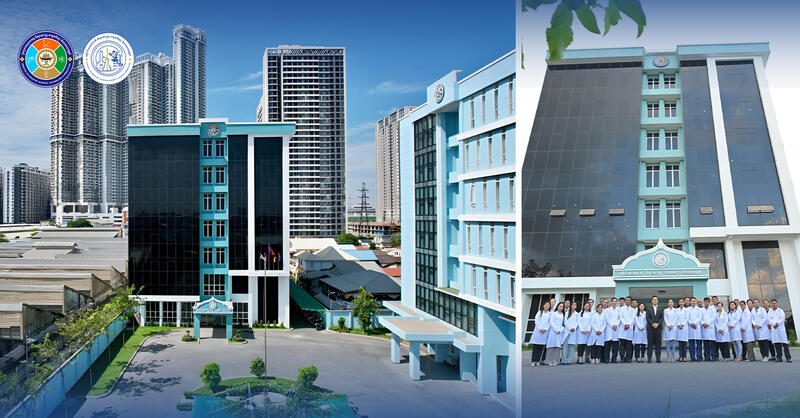

.png)
សេចក្តីជូនដំណឹង និងឯកសារ

អបអរសាទរខួបទី៣១ ទិវាប្រកាសរដ្ឋធម្មនុញ្ញ នៃព្រះរាជាណាចក្រកម្ពុជា (២៤ កញ្ញា ១៩៩៣ - ២០២៤)

មន្ទីរពិសោធន៍ជាតិ វិទ្យាសាស្ត្រ បច្ចេកវិទ្យា និងនវានុវត្តន៍ នឹងត្រូវសម្ពោធដាក់ឱ្យដំណើរការជាគ្រឹះស្ថានសាធារណៈរដ្ឋបាល នៅថ្ងៃទី១២ ខែធ្នូ ឆ្នាំ២០២៤។

អបអរសាទរ ខួបអនុស្សាវរីយ៍លើកទី៧២ នៃទិវាបុណ្យឯករាជ្យជាតិ ៩ វិច្ឆិកា និងទិវាកំណើតនៃកងយោធពលខេមរភូមិន្ទ របស់ព្រះរាជាណាចក្រកម្ពុជា។ ( ៩ វិច្ឆិកា ១៩៥៣ - ៩ វិច្ឆិកា ២០២៥ )

អបអរសាទរ ព្រះរាជពិធីបុណ្យអុំទូក បណ្ដែតប្រទីប និងសំពះព្រះខែ អកអំបុក Happy Cambodia’s Water Festival

សូមស្វាគមន៍មកកាន់ព្រឹត្តិបត្រព័ត៍មានប្រចាំខែតុលា របស់វិទ្យាស្ថានជាតិ វ.ប.ន. ឆ្នាំទី៣ លេខ១០! Welcome to NISTI's Monthly Newsletter of October, Vol 3, Issue 10!

«វិធីសាស្ត្រផ្ទេរចំណេះដឹងប្រកបដោយប្រសិទ្ធភាព» និង«អក្ខរកម្មឌីជីថល ប្រព័ន្ធផ្សព្វផ្សាយ និងព័ត៌មាន» នៅវិទ្យាស្ថានជាតិវិទ្យាសាស្ត្រ បច្ចេកវិទ្យា និងនវានុវត្តន៍។ វគ្គបណ្តុះបណ្តាលនេះធ្វេីឡេីងក្នុងគោលបំណងបង្កើនប្រសិទ្ធភាពដល់មន្ត្រីរាជការ ក្រោមឱវាទក្រសួងឧស្សាហកម្ម វិទ្យាសាស្ត្រ បច្ចេកវិទ្យា និងនវានុវត្តន៍ (MISTI)

រៀបចំសិក្ខាសាលាស្តីពី «គុណភាពនិងសុវត្ថិភាពសាច់កែច្នៃ-បង្កកសម្រាប់សហគ្រាសធុនមីក្រូ តូច និងមធ្យម» នៅវិទ្យាស្ថានជាតិវិទ្យាសាស្ត្រ បច្ចេកវិទ្យា និងនវានុវត្តន៍ រាជធានីភ្នំពេញ។ សិក្ខាសាលានេះធ្វេីឡេីងក្នុងគោលបំណងប្រមូលធាតុចូលដើម្បីផ្ទៀងផ្ទាត់គោលការណ៍ណែនាំស្ដីពីសុវត្ថិភាពសាច់កែច្នៃ-សាច់បង្កក